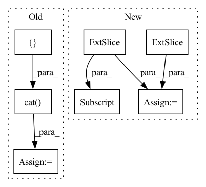

Pattern ID :20490
Before Change
out = x
out2 = fac1 * torch.exp(-1.0 * alpha)
for i, layer in enumerate(self.fc_layers):
out = layer(torch.cat([ out, out2, dim=1) )
return self.fc_out(torch.cat([out, out2], dim=1))
After Change
def forward(self, x, alpha, fac1):
out = x
out2 = torch .exp(-F.interpolate(alpha[:, None] , self.in_feat))[:, 0]
out2 = out2 * fac1 + (1 - fac1)
return self.fc_out(out * out2)
In pattern: SUPERPATTERN
Frequency: 4
Non-data size: 7
Instances Fragment ID: 66245842
Project Name: sungbinlim/neuboots
Commit Name: d406d3694ab25140dafeb3f2af61335a50011a32
Time: 2020-09-25
Author: phelahab@gmail.com
File Name: models/gbsnet.py
M Class Name: GbsCls
N Class Name: GbsCls
M Method Name: forward(4)
N Method Name: forward(4)
M Parent Class: nn.Module
N Parent Class: nn.Module
M File Name: models/gbsnet.py
N File Name: models/gbsnet.py
M Start Line: 34
M End Line: 38
N Start Line: 32
N End Line: 35
Before Change
rel_embedded = self.relation_embeddings(relation_batch).view(-1, 1, self.img_height, self.img_width)
// batch_size, num_input_channels, 2*height, width
stacked_inputs = torch.cat([ e1_embedded, rel_embedded)
// batch_size, num_input_channels, 2*height, width
stacked_inputs = self.bn0(stacked_inputs)
// batch_size, num_input_channels, 2*height, width
x = self.inp_drop(stacked_inputs)
// (N,C_out,H_out,W_out)
x = self.conv1(x)
x = self.bn1(x)
x = F.relu(x)
x = self.feature_map_drop(x)
// batch_size, num_output_channels * (2 * height - kernel_height + 1) * (width - kernel_width + 1)
x = x.view(batch_size, -1)
x = self.fc(x)
x = self.hidden_drop(x)
if batch_size > 1:
x = self.bn2(x)
x = F.relu(x)
x = torch.mm(x, self.entity_embeddings.weight.transpose(1, 0))
// TODO: Why this?
x += self.b.expand_as(x)
pred = F.sigmoid(x)
return predAfter Change
def forward(self, batch, labels):
batch_size = batch.shape[0]
heads = batch [:, 0:1]
relations = batch[:, 1:2]
tails = batch[:, 2:3]
// batch_size, num_input_channels, width, height
heads_embs = self.entity_embeddings(heads).view(-1, 1, self.img_height, self.img_width)
relation_embs = self.relation_embeddings(relations).view(-1, 1, self.img_height, self.img_width)
tails_embs = self.entity_embeddings(tails).view(-1, self.embedding_dim)
// batch_size, num_input_channels, 2*height, width
stacked_inputs = torch.cat([heads_embs, relation_embs], 2)
// batch_size, num_input_channels, 2*height, width
stacked_inputs = self.bn0(stacked_inputs)
// batch_size, num_input_channels, 2*height, width
x = self.inp_drop(stacked_inputs)
// (N,C_out,H_out,W_out)
x = self.conv1(x)
x = self.bn1(x)
x = F.relu(x)
x = self.feature_map_drop(x)
// batch_size, num_output_channels * (2 * height - kernel_height + 1) * (width - kernel_width + 1)
x = x.view(batch_size, -1)
x = self.fc(x)
x = self.hidden_drop(x)
if batch_size > 1:
x = self.bn2(x)
x = F.relu(x)
scores = torch.sum(torch.mm(x, tails_embs.transpose(1, 0)), dim=1)
predictions = F.sigmoid(scores)
loss = self.compute_loss(predictions, labels)
return loss
Fragment ID: 66245840
Project Name: pykeen/pykeen
Commit Name: e310dc04ccd0763bef25540fb0a19a7423a27a94
Time: 2018-09-19
Author: ali-mehdi@live.de
File Name: src/kg_embeddings_model/conv_e.py
M Class Name: ConvE
N Class Name: ConvE
M Method Name: forward(3)
N Method Name: forward(3)
M Parent Class: nn.Module
N Parent Class: nn.Module
M File Name: src/kg_embeddings_model/conv_e.py
N File Name: src/kg_embeddings_model/conv_e.py
M Start Line: 116
M End Line: 151
N Start Line: 114
N End Line: 153
Before Change
out1 = x
// out2 = torch.exp(-F.interpolate(alpha[:, None], self.in_feat))[:, 0]
out2 = torch.exp(-alpha) * fac1
out = torch.cat([ out1, out2, dim=1)
return self.fc_out(out)
class GbsConvNet(nn.Module):After Change
def forward(self, x, alpha, fac1):
out1 = x
if self.in_feat != self.n_a:
out2 = torch .exp(-F.interpolate(alpha[:, None] , self.in_feat))[:, 0] * fac1
else:
out2 = torch.exp(-alpha) * fac1
return self.fc_out(out1 * out2) Fragment ID: 66245847
Project Name: sungbinlim/neuboots
Commit Name: e398255427327fff201f2d2e562bf00bec52783f
Time: 2020-09-28
Author: phelahab@gmail.com
File Name: models/gbsnet.py
M Class Name: GbsCls
N Class Name: GbsCls
M Method Name: forward(4)
N Method Name: forward(4)
M Parent Class: nn.Module
N Parent Class: nn.Module
M File Name: models/gbsnet.py
N File Name: models/gbsnet.py
M Start Line: 32
M End Line: 36
N Start Line: 33
N End Line: 38
Before Change
emission_pred, torch.tensor([-1e-38]).to(device)) // was -float("Inf"), changed & nan errors stopped (nan from logsumexpbackward)
// create "zero_plane" for next bit:
zero_plane = torch.unsqueeze(-1e-38*torch.ones([ batch_size, fb_max_length = torch.cat( (zero_plane, emission_pred_acc_x_length), 2)
phns = phns.to(device)
// manipulate y tensor, and then "torch.gather"
phns_copied = phns.unsqueeze(1).expand(-1, fb_max_length, -1)//.to(device)After Change
// apply mask based on phn_lens_abs
mask_phn_lens = (
torch.arange(U_max).to(device)[None, :] < phn_lens_abs [:, None]
)
emiss_pred_useful = torch.where(
mask_phn_lens[:, None, :],
emiss_pred_useful,
torch.tensor([1e-38]).to(device), Fragment ID: 66245853
Project Name: speechbrain/speechbrain
Commit Name: cc600a8d98ce0d7f63e3ceef4dce88dbd7928a63
Time: 2020-06-01
Author: rastorge@eos18.server.mila.quebec
File Name: speechbrain/alignment/aligner.py
M Class Name: ViterbiAligner
N Class Name: ViterbiAligner
M Method Name: make_emiss_pred_useful(5)
N Method Name: make_emiss_pred_useful(5)
M Parent Class:
N Parent Class:
M File Name: speechbrain/alignment/aligner.py
N File Name: speechbrain/alignment/aligner.py
M Start Line: 104
M End Line: 123
N Start Line: 104
N End Line: 133